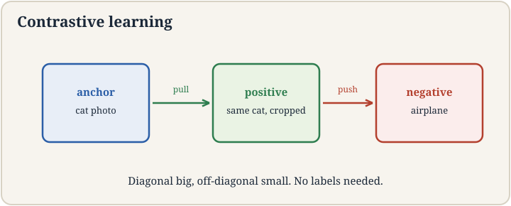
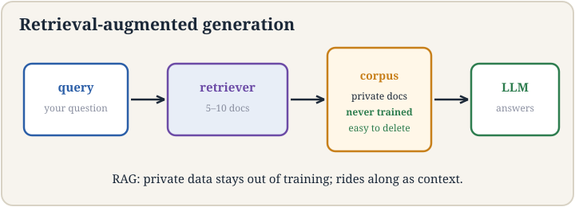

Lecture 13: Contrastive Embeddings, Search, and RAG
Video blocked (ad-blocker or local file mode).
Watch on YouTubeVideo not loading? Watch on YouTube
Original lecture. Tengyu Ma covers contrastive learning, semantic search, and retrieval-augmented generation. [uncertain] The YouTube title for this video is mislabeled; the title here follows the transcript.
How to read this lesson
This lesson has two levels. Level 1 (Core) contains what you need to understand everything that follows in CS229 and the courses that build on it. Level 2 (Deep) contains what you need for correct, interview-grade understanding. Read Level 1 straight through. Return to Level 2 when you want depth.
No prerequisites are assumed. Every term is defined at first use. Embeddings and representation learning were defined in lecture 12; they are reused, not re-explained.
Level 1: Learning embeddings without labels
Lecture 12 wanted similar inputs near each other in vector space. How do you learn that mapping with no labels? Contrastive learning 06:53 ⏱06:53. The trick: manufacture supervision from the data itself.
Take an image x. Apply augmentation twice: random crop, flip, blur, noise 07:24 ⏱07:24. Cropping matters most. Two random crops of the same photo show different corners, maybe the top-right and the bottom-left. They are a positive pair: different views, same source. Any two crops from different images are a negative pair.

The loss pulls positives together and pushes negatives apart. In matrix terms: make the diagonal big and the off-diagonals small 28:32 ⏱28:32. Each row is one image’s similarities to everything in the batch. The diagonal holds its positive pair. Everything else should score low. No human ever labeled anything. The augmentations are the supervision.
Nowhere. They are manufactured. Two augmentations of the same image are declared similar by construction. Everything else in the batch is declared dissimilar. The model learns embeddings that respect those declarations. This is called self-supervised learning: the data provides its own training signal through the augmentation design. Because it forces the model to match different parts of the same scene. Two crops may share no pixels, yet the model must place them nearby. That demands real understanding of content, not pixel matching. Weaker augmentations let the model cheat with low-level statistics. The crop is the hardest task that is still fair.
Level 1: Hard negatives
Most negatives are easy: a cat photo versus an airplane is no contest. Easy negatives teach little. Hard negatives 41:54 ⏱41:54 are the pairs the model currently confuses: two similar-but-different images it cannot yet tell apart. Mining them, finding the informative negatives, drives learning.
There is a curriculum logic. Early in training everything is hard, so random negatives suffice. Late in training, only hard negatives move the needle. Systems that ignore this waste compute on solved comparisons. The lecture treats hard-negative mining as a first-class design decision, not a trick.
The model’s current confusion. A hard negative is a dissimilar pair the model scores as similar: it looks alike but is not. These pairs carry the most gradient signal because the loss is largest on them. Easy negatives contribute near-zero loss and near-zero learning. Training efficiency is mostly about spending compute on the informative pairs. Yes, through false negatives. A mined “negative” might actually be a positive: two photos of the same cat from different batches, declared dissimilar. The loss then punishes a correct similarity. Hard-negative mining needs safeguards against label noise, or it teaches the model to separate things that belong together.
Level 1: Semantic search
Embeddings turn search into geometry. Embed every document once. Embed the query. Return the nearest vectors. That is semantic search: matching by meaning, not by keywords.
The lecture’s framing is the LLM era. Frontier labs train generic models on public data. Your documents are private: bank statements, the CEO’s memo, your laptop. You cannot leak them into the lab’s training set, and you do not want to. Semantic search over your own corpus keeps the private data on your side while still making it searchable.

Level 1: Retrieval-augmented generation
Retrieval-augmented generation (RAG) 53:41 ⏱53:41 answers questions with private data and no training. The recipe: the user asks a question. A retriever finds the most relevant documents in the private corpus, typically five to ten 56:22 ⏱56:22. Those documents plus the question go into the LLM’s context. The LLM answers from both.
Compare with the alternative: fine-tune the model on your private data. Fine-tuning is expensive, needs enough data to matter, and forces you to host a massive model 55:04 ⏱55:04. RAG needs no training and no hosting. The model never sees your data during training. It sees only the retrieved snippets, at query time.
RAG has four advantages the lecture names. Modularity: retrieval and generation are separate systems, improved independently. Governance: permissions apply at retrieval 57:18 ⏱57:18. Deny a user access to the earnings projection and the retriever simply never returns it. Forgetting: delete a document from the corpus and it is never retrieved again 57:50 ⏱57:50. Forgetting trained-in data is an open research problem; forgetting retrieved data is a delete key. Cost: retrieval is far cheaper than training or hosting.
RAG when the data changes, when permissions matter, when data is scarce, or when you cannot afford training and hosting. Fine-tuning when the task needs deep behavioral change, like a new language or a new skill, that retrieved context cannot supply. Many systems use both: RAG for knowledge, fine-tuning for behavior. The lecture’s framing is that RAG is the default for knowledge and fine-tuning the tool for capabilities. Retrieval quality. If the retriever misses the needed document, the LLM answers from ignorance, confidently. Chunking decisions, embedding quality, and the number of retrieved documents all move results. RAG also inherits the LLM’s context limits: too many documents crowd out the question. The failure mode is silent: wrong answers with no warning.
Level 2: The contrastive loss, precisely
For a batch of N images, make 2N augmented views. For view i with positive partner j, the loss is:
loss_i = -log( exp(sim(i,j)/t) / sum_k exp(sim(i,k)/t) )
Similarity is usually cosine. Temperature t sharpens the distribution. The numerator rewards the positive pair. The denominator sums over all 2N-1 others, pushing every negative down. This is the InfoNCE form: the diagonal-big, off-diagonal-small objective in one formula.
Temperature matters more than it looks. Low temperature makes the loss focus on the hardest negatives. High temperature spreads attention. It is a hyperparameter with real effects, tuned like a learning rate.
Level 2: RAG as a systems pattern
Step back and RAG is a pattern, not a product. Separate the knowledge store from the reasoning engine. The store is cheap, editable, permissioned. The engine is expensive, frozen, general. The interface is retrieval: the engine asks, the store answers.
The pattern recurs. Tool-using agents retrieve API results into context. Coding assistants retrieve repository snippets. The lecture’s governance and forgetting arguments apply to all of them: anything the model should not permanently know belongs in the store, not the weights. Weights are write-once. Stores are editable. Design accordingly.
Recap: the whole lesson on one screen
Eight ideas carry this lecture. Read each card. Say the core sentence out loud. If you can, you own the lesson.
Two augmentations of one image are a positive pair. Everything else is negative. Pull positives, push negatives. No labels.
Key: augmentations are the labels
Each row scores one view against the batch. The positive pair sits on the diagonal. Everything else should score low.
Key: the batch is the world
Random crops force matching different parts of one scene. The model must understand content, not pixels. Hard-but-fair tasks teach.
Key: crop, flip, blur, noise
Confused pairs teach. Easy pairs contribute nothing. Mine the hard ones, but guard against false negatives.
Key: spend compute on confusion
Embed the corpus once. Embed the query. Nearest vectors win. Meaning, not keywords. Private data stays private.
Key: near means relevant
Question plus 5-10 retrieved docs into the LLM. No training, no hosting. Knowledge without the training bill.
Key: context, not weights
Modular. Governed by permissions. Forgetting is a delete key. Cheap. Fine-tuning is for behavior, RAG for knowledge.
Key: editable beats trained-in
Missed retrieval means confident ignorance. Chunking, embedding quality, and doc count decide results. No warning on failure.
Key: retrieval is the bottleneck
Official sources and further reading
Official: - Lecture 13 video: contrastive learning 06:53 ⏱06:53, augmentations 07:24 ⏱07:24, diagonal structure 28:32 ⏱28:32, hard negatives 41:54 ⏱41:54, RAG 53:41 ⏱53:41, fine-tuning cost 55:04 ⏱55:04, retrieved count 56:22 ⏱56:22, governance 57:18 ⏱57:18, forgetting 57:50 ⏱57:50. - CS229 Spring 2026 official course notes: representation learning chapter.
Further reading: - Chen et al. (2020), “A Simple Framework for Contrastive Learning of Visual Representations” (SimCLR): the canonical method. - Lewis et al. (2020), “Retrieval-Augmented Generation for Knowledge-Intensive NLP Tasks”: the RAG paper.
Caveats from these sources. The lecture’s contrastive presentation follows the SimCLR shape; other variants (MoCo, CLIP) differ in the negative handling. The “five to ten documents” count is typical, not optimal; it varies by task. The forgetting argument assumes the corpus is the only copy; cached embeddings need their own deletion.
Connections to the other courses
- CS336: retrieval augments language models at scale; the course covers RAG systems in depth.
- CS224N: sentence embeddings and dense retrieval are the text versions of this lecture.
- CS329H: tool use generalizes RAG: retrieve anything, not just documents, into context.
Contrastive and RAG cheatsheet. Contrastive: positive = two augmentations of one image; negatives = rest of batch; loss pulls positives, pushes negatives; diagonal big, off-diagonal small. Hard negatives: confused pairs teach; beware false negatives. Crop is the key augmentation. Semantic search: embed corpus, embed query, nearest wins. RAG: retrieve 5-10 docs, add to context, generate; no training. Wins: modular, governed, forgettable, cheap. Fails: silently, at retrieval.
Weights are write-once. Anything editable, permissioned, or deletable belongs in a store, not in parameters. RAG is the pattern: cheap store, frozen engine, retrieval between them.
Sources
- VIDEOLecture 13 video, Stanford Online YouTube
- NOTESOfficial subtitle transcript (en-US)
- NOTESCS229 Spring 2026 official course notes (local PDF)